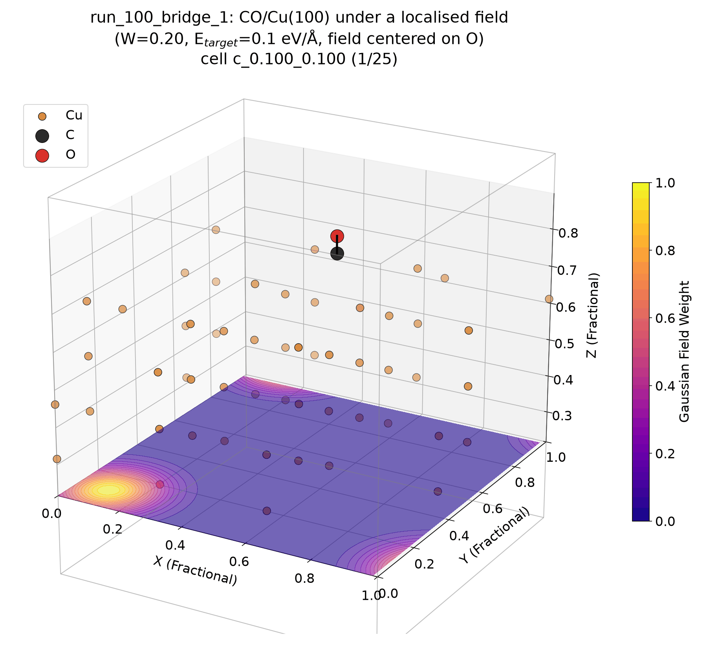
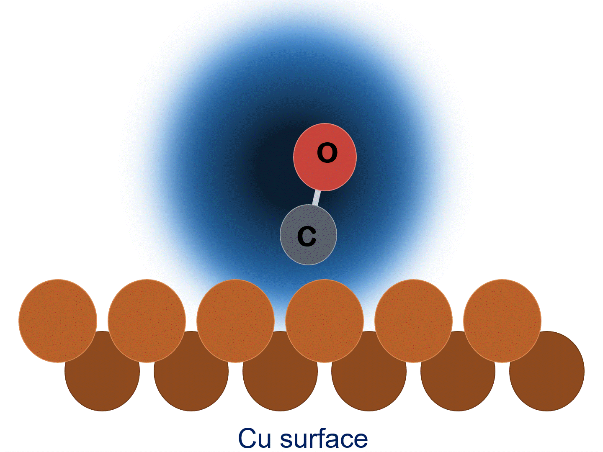
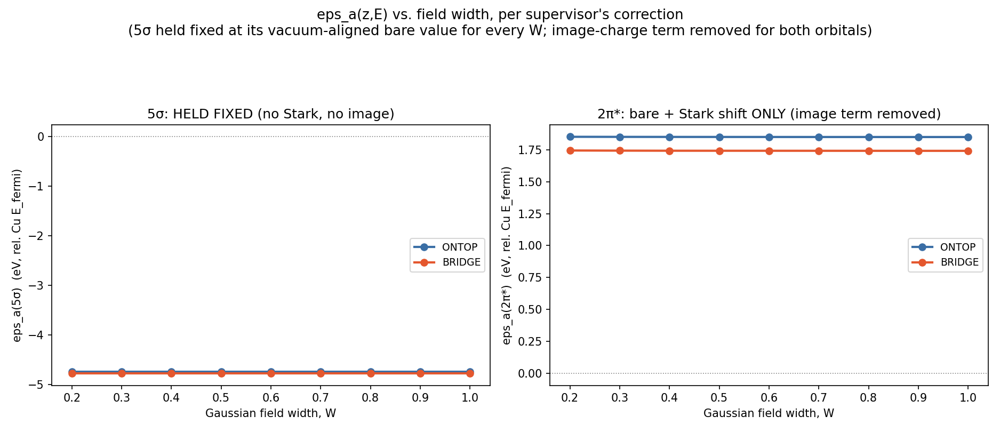
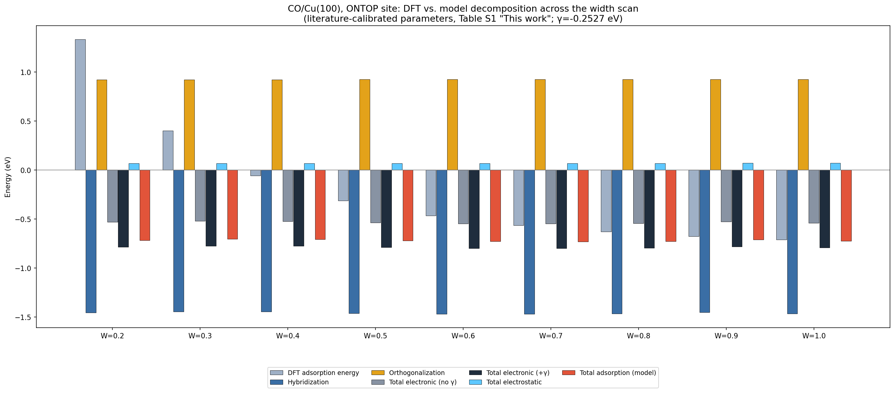
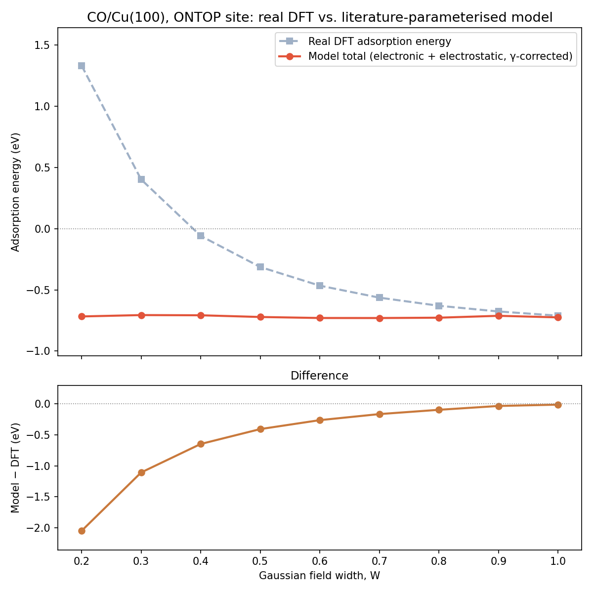
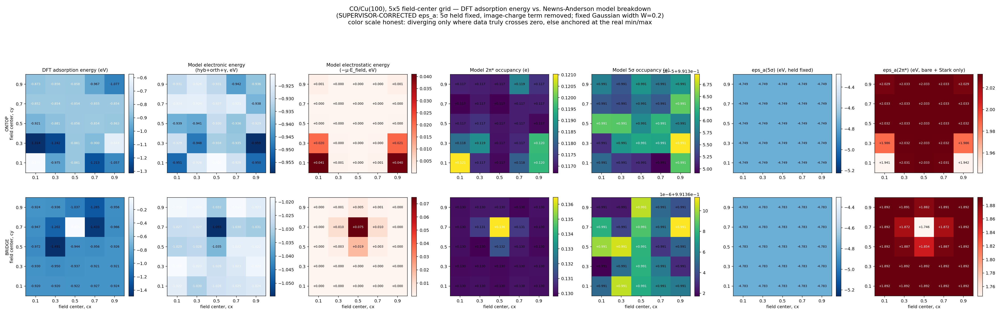

Electric-field effects on CO chemisorption at Cu(100)
Electric fields at an electrochemical interface don't just shift adsorption energies uniformly — their spatial profile (how wide the field is, and where it is centered relative to the adsorbate) changes which orbitals respond and by how much. This project uses a custom VASP plugin to apply localized, Gaussian-shaped external fields over a Cu(100) slab with a CO molecule adsorbed at the ontop or bridge site, and tracks how the adsorption energy, induced dipole, and 5σ/2π* orbital hybridization respond as the field's width and center position are scanned systematically.
Structures & field scans




Model: decomposing the binding energy
Rather than treating the DFT adsorption energy as a black box, I use a single-level Newns–Anderson chemisorption model to split it into physically interpretable pieces for each frontier orbital (CO's 5σ donor level and 2π* acceptor level): a hybridization energy from broadening against the Cu $d$-band, an orthogonalization (Pauli repulsion) energy, and an electrostatic term from the induced dipole interacting with the external field. The orbital levels themselves are referenced to the vacuum level and shifted with field via the analytically exact Stark term from the plugin's own external potential.


Model vs. DFT
The model reproduces the right order of magnitude and sign of the chemisorption energy at both sites, with a single empirical offset (γ) absorbing the gap between this simplified model and the full DFT binding energy. Comparing site-to-site and across the field grid highlights where the single-level picture breaks down — most visibly near the actual CO bond position, and across the strong geometry relaxation that the model itself doesn't capture.


What I learned
- Vacuum-level alignment of the bare CO orbital energies (rather than using literature defaults) meaningfully closes the gap between the model and DFT at zero field.
- The coupling strength between CO and the Cu $d$-band (a single scaling parameter in the model, borrowed from literature fits across many metals) is under-constrained by only two adsorption sites — refits in different directions are equally consistent with the available calibration data.
- Most of the residual width-dependence the simple model misses traces back to geometry relaxation physics, not the electronic structure terms themselves.